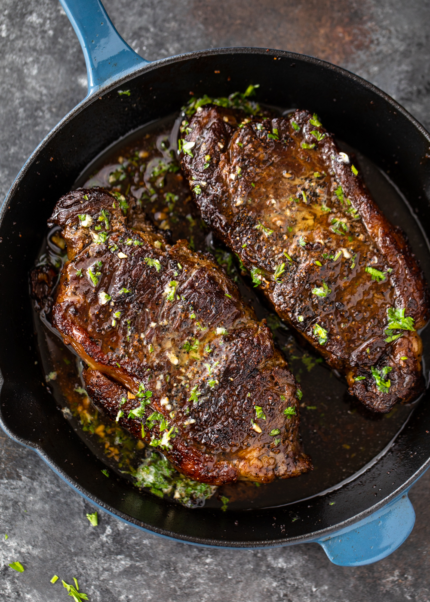

Cast Iron Pan-Seared Steak (Oven-Finished)
Steak is marinated in the fridge for 45 minutes, then quickly pan-seared in a
cast iron skillet before it is finished in the oven.

Ingredients
- 2 (6 ounce) beef top sirloin steaks
- 2 cups orange juice
- 1 cup apple cider vinegar
- ½ cup Worcestershire sauce
- 1 ½ tablespoons steak seasoning (such as Fiesta Brand® Uncle Chris'), or to taste
- freshly ground black pepper to taste
- 2 teaspoons olive oil
- sea salt to taste